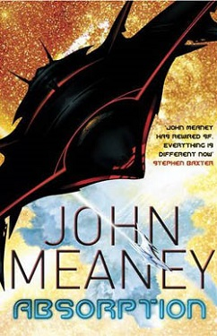
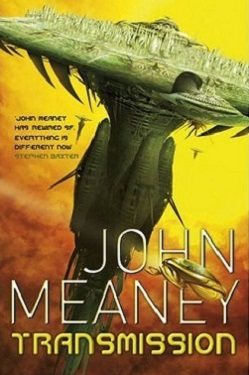
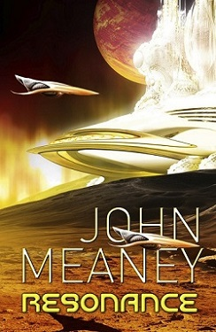

The cop: Donal Riordan, undead, imprisoned in a coffin below ground. The city: Tristopolis, gothamesque and baroque, its unchanging sky deep purple, its elevators propelled by indentured wraiths, and its power produced by necroflux reactors, fuelled by the bones of the dead.
When powerful conspiracies threaten Tristopolis from the far side of the world, can a freed Donal find a way to stop them, and in the process find a reason to carry on existing?
Lieutenant Donal Riordan is no longer the man he was... but to conspirators who threaten the civic order of Tristopolis and the rights of non-human sentients, he is an enemy who needs to be silenced. Even the most powerful of cities can change its character when the circumstances are filled with enough paranoia and fear.
And when the conspiracy's international dimensions become clear, Donal must travel to Illurium, not just to Silvex City, the city that stands on vast glass planes, but further, to places unlike Tristopolis, yet just as strange.
One thing Dark Blood doesn't do is let you relax... In places it's a bloodbath appropriate to the
title, and as John Meaney follows his take on magic's equivalent of nuclear technology through to its
logical conclusion he creates one of the most satisfying border crossing fusions of Dark Fantasy,
Horror and hard Science Fiction in years... before hitting us with a twist ending straight out of
Edgar Allan Poe.
Anthony Brown, Starburst
John Meaney's city of Tristopolis... is a vivid and fascinating creation, first displayed in Bone
Song, now revisited in Dark Blood. The sequel unravels more of the conspiracy revealed in the first
book, only now the detective hero is dead - or, rather, undead, having been revived as a zombie - and
facing the possibility that new legislation will strip human rights from him and all other undead
citizens. Meaney entertainingly merges the police procedural with science fantasy in its most Gothic
mode.
Lisa Tuttle, Times (London)
Dark Blood is highly entertaining, more action driven and seasoned with splatters of the titular
liquid.
Andrew Osbourne, SFX
Over the course of two books, Meaney has successfully integrated the tricks of horror with the
techniques of crime and SF. The surface of this series is horror, but it is only skin deep. These books
have the comfort of rationality. The flesh of Dark Blood is that of a detective novel. This can be
difficult to manage convincingly in science fiction, but the hard work of building the universe in the
first book is repaid here: we now have a conception of normality within the setting so we can seek
clues ourselves and attempt to get ahead of Riordan. As with any good detective novel, flicking back
through the pages shows how many clues were there. The bones of the books, meanwhile, confirm a
scientifictionally coherent universe within this endeavour. More than the clues for detective readers,
I got a great deal of pleasure out of the hints for astronomy fans, of which I will say no more to
allow like-minded readers their own enjoyment.
Duncan Lawie, Strange Horizons
And there is more to come, with plenty of swearing and action too, given the kicker of a cliffhanger
on the last page.
Imagine a city named Tristopolis, where tall towers rear beneath a dark, indigo sky, gargoyles glide overhead, while purple cabs drive along the streets. Elevators are powered by boundwraiths. Warmth and power come from reactor piles, deep inside Energy Authority complexes, where the bones of the dead are stacked. Necroflux replays the fragmented memories and feelings of two thousand corpses in each reactor, producing a chaos of mixed identities and suffering that the living would rather not know about.
Tough cop Lieutenant Donal Riordan is assigned to protect a visiting diva, Maria daLivnova, who may be a target for those who collect the bones of great performing artists.
But the dark cult is more powerful and secretive than anyone, even Donal's non-human allies, can suspect. And he has been touched by the bones.
Do you hear the bones?
What the reviewers think:
Brilliantly fuses SF with elements of gothic fantasy.
SFX
Fast paced, very entertaining and out of the ordinary... both haunting and
engaging.
SFFWorld.com
Crisply written and vividly portrayed
Guardian
Meaney's creepy death-haunted world lingers in the mind long after the book is
closed... a smart and spooky read.
The Times
Dark fantasy crossed with mean-streets paranoia... Bone Song... surprises at
every turn, particularly a last-minute twist that comes out of nowhere, and a last
page twist that overturns your expectations about follow-up volumes. Oh yes, this is
the start of a series, and a very welcome start.
Starburst
A remarkable book featuring a unique dark fantasy/SF world and great writing. The
police procedural plot, creepy technology, and seamless, fascinating world make it a
real page-turner, full of great twists and details. Bone Song has really got
it all: fantasy, horror, science fiction, cops, crime -- even a love story and a dose
of dark, dry humor. A great read and I can't wait for the next one.
Kat Richardson,
author of Greywalker
John Meaney brings a city of death to richly textured life. In an amazing blend of
noir mystery and dark fantasy, Meaney doesn't just build a world -- he creates an eerie
culture that you can truly visualize and feel. Bone Song is a thrilling and
suspenseful beginning to a great new series.
Mark Del Franco, author of Unshapely
Things
It's not often that you open a book expecting a good science fiction mystery
crossover and find yourself blown away by a world that's so multidimensional and
textured that you have to keep looking up from the pages to make sure the sky is blue
and the lights are on. The setting was so foreign, alien really, that it's hard to
believe just how real it seemed. It seems that greed, power, lust, and cruelty are
concepts that bridge the gap between our world and others -- to make the story come
alive.
There's many books that tell a compelling story with realistic characters and a
satisfactory end. There's many books that we say we couldn't put down. This book is
one of those but it's also a story that doesn't let you walk quietly away when you
close the book on the last page, because it's going to linger in your thoughts and
your dreams -- the ideas, the relationships, and the people are memorable because of
who they are and what they are willing to do to make the world a better place.
SFRevue.com & GumshoeReview.com
Think Dirty Harry in a city created by the bastard love-child of Jeff
VanderMeer and China Miéville. The backdrop of a hardboiled crime plot cleverly
disguises stories of human interaction, trust, mistrust, loyalty, morality,
acceptance and love while delivering a great mystery.
NethSpace.com
The Cold War revisited - as up to date as tomorrow's headlines.
November 1957: Sputnik circles in orbit. The free world sees a threat of atomic war.
Schoolteacher and former commando Paul Reynolds reluctantly agrees to work for MI6.
In East Berlin, scientist Elsa Vadimova, desperate to escape, holds - or can steal - the price of freedom.
A secret from the past, an enemy within, a promise of the future.
The Cold War gave birth to thrilling tales of espionage, but they shaded over Europe's monstrous recent past, and failed to notice new technology poised to shape the world.
Now read On The Brink: a new perspective on the Cold War spy thriller, utterly relevant today.
Introducing Case.
When terrorists use cyber attacks and lethal bioweapons, who is going to defend you? Keyboard warriors? Intelligence officers? Special-forces operators? More often than the public knows, we need them all.
Sometimes the cyber geek, the spy and the fighter are the same man. Or woman.
When his best friend Fuad commits suicide on his wedding day, it seems unconnected to Case's investigation of cyber intrusion at a NATO airbase. But Fuad was a security specialist at a London bank, and a near-identical suicide inside the Air Force begins a hunt that leads from idealistic hackers in Berlin and Stockholm to manipulative psychologists and organized crime within the Moscow establishment, and a stolen Soviet-era virus without vaccine or antidote. But behind them all lies a combat jamaat, a jihadist group whose first target is going to be London, with a death toll that may eventually reach millions.
Can Case and his formidable senior partner Kat, both operatives of IACS - pronounced Eye-Axe - track down and stop the threat before masses of people begin to die?
An explosive cyber attack kills two hundred innocent civilians. Just miles away, an unknown assassin murders the head of IACS, Britain's most secret cyber agency.
Case and Kat - the agency's toughest, smartest operators - are desperate for revenge. For justice.
But they'll need all their combat skills and cyber expertise to face a conspiracy of apocalyptic proportions, launched from the harsh Icelandic wilderness. Can two desperate people halt a global attack and avert World War Three?
From award-winning author John Meaney, another mission for Case and Kat, drawing on Meaney's own experience of hardcore martial arts and leading-edge computing, and shadowy hints from the real-world special forces working the interzone between cyber and kinetic warfare.
Josh Cumberland’s daughter lies in a coma she will never wake from. He can’t help her, but perhaps he can save someone else.
This is near-future Britain: storms, flash whirlwinds and floods. A legalized knife culture. And a missing rich schoolboy, whose buried memories hold the key to political corruption at the highest levels.
Josh is a cyber specialist, ex-special forces and relentless. Can he pull a country and a world back from the edge of disaster?
Cumberland leaps off the page, a trained killer whose anger and grief at his daughter's condition
is brilliantly portrayed; the depiction of his simmering rage, barely held in check, and how he
channels it, provides a masterclass in characterisation.
Eric Brown, The Guardian
What starts off as a simple missing persons enquiry develops into a full-blown coup against a
fascist state... Set in a Britain extrapolated from today's violent streets, yet still highly recognisable,
Edge is the first in what will hopefully be a long running series.
Paul Simpson, Total Sci-Fi
The technology is very clearly described and completely believable while John's knowledge and
research of martial arts is quite astounding. He manages to create a very rich vision of a future
Britain that is disturbingly close to being quite likely.
The characters themselves are wonderfully fleshed out and their interaction is quite mesmerising...
John (or should I say Thomas Blackthorne) has created a dark, believable vision of a (near) future
Britain, but more importantly an intelligent, slick and brilliantly executed novel with a quite
unexpected but superbly scripted ending.
Antony, www.sciencefictionandfantasy.co.uk
This is Josh Cumberland: ex-special forces cyber specialist, enraged by what happened to his daughter, in need of action to put things right.
And this is his world: near-future Britain, climate catastrophe, and now a rash of suicides: teenagers in groups of 13, killing themselves with knives. Beneath it all, in the corrupt heart of the political establishment, malevolent technology reaches new heights - and depths.
Can Josh pull the country and himself back from the tipping-point?
Within five pages...I was completely hooked... the perfect blend of action and science fiction...
I can only hope that there will be more.
The Eloquent Page
I absolutely don’t want to live in the world Blackthorne has created. I didn’t want to in Edge (the first book in the
series) and I most certainly don’t want to now. I do, however, want to read about it. It’s relentless and gripping, with a
brilliant balance between the personal and the political... it doesn’t just contain violence - it explores the consequences.
The characters are real and there is no physical action without a physical and emotional reaction. It could be our world,
tomorrow. Except I truly hope it isn’t.
Gillian Polack, BiblioBuffet
Point follows on directly from the explosive finale of Edge... The novel feels very much like a seamless continuation,
it's got the same fast pace, tight dialog and distinct voice. There is also the same harsh realistic and gritty feel and
plenty of action... The plot itself is inventive, intriguing and has enough loops that you could cover them in tomato
sauce and sell them in a tin. Rewarding to read as a stand alone or even better after you've read Edge, Point is a riotous
tale of a near future Britain, vivid, defined and totally immersive.
Anthony, sfbooks.com



In 8th century Norseland, a young warrior called Ulfr returns to his village where his comrades, under mesmeric compulsion, are slaying one of their own. In 1920s Zurich, a young Jewish woman, Gavriela Wolf, returning home from her first lecture at the ETH where Einstein studied, witnesses the first hint of fascist violence destined to sweep across Europe. On 27th century Fulgor, Roger Blackstone (son of a long-term spy, his nature as a mu-space Pilot hidden) perceives an evil that cloaks itself from everybody else.
A million years from now, in an airless hall upon the Moon, decorated with shields and spears, Ulfr, Gavriela, Roger and others awaken in transparent bodies of living crystal, ready for the final battle. But in their normal waking lives, they will remember only fragments of far future meetings.
Each of their stories is a chronicle of their century and more, as their time-separated lives and minds become ever more entangled, playing out their parts in a confrontation that began an epoch ago.
John Meaney has already made a name for himself in science fiction as a brilliant, inventive writer, and Absorption
is his most compelling and accomplished work yet. If he can sustain the pace over two more books, he may produce his
masterpiece in The Ragnarok Trilogy...Absorption is the best hard science fiction I’ve read this year, well written,
exciting, mysterious, full of interesting characters and ideas...
The Times, London
'Absorption'... takes us from a thousand years in the past to half a billion years in the future with several stops in between. It's the kind of complex plot that means you have to pay attention, with multiple timelines and characters who interact only marginally. Very quickly, the subtle clues that link these different scenarios start to appear, leading to more and more 'a-ha!' moments when you suddenly make a connection. This makes it a very satisfying read, paying back the investment in time with interest...[A] great volume of space opera... I was thoroughly engrossed in the world that John Meaney has created. I look forward to the rest of the trilogy.
Gareth D. Jones, SFcrowsnest.com
Transmission is John Meaney’s latest epic SF Space Opera and spans thousands of years as various characters find themselves intertwined inexplicably through time.... The characters are well written, the world building is phenomenal and the pace as chapters switch from time zones is just right, keeping the tension levels up. The female characters are particularly strong and literally jump off the page, particularly the WWII code breaker Gavriela. The novel is also steeped in historical accuracy and authenticity.
Theresa Derwin, Terror-Tree.co.uk
Resonance is a book driven by big ambitions. Meaney has penned a story that aims to be epic beyond even the level of Dune or similarly famed series. Furthermore, the amount of research that has gone into the book adds a surprising degree of credibility...
Starburst Magazine
Nulapeiron: a world isolated for twelve centuries, whose ten billion inhabitants live in subterranean strata whose upper levels, dwellings of the aristocratic classes, boast organic technologies and the use of Oracles whose ability to foresee their future is a most useful curse.
Tom Corcorigan is young and impoverished, witness to the death of a mysterious woman who may be one of the legendary Pilots, and soon to be thrust into dreadful suffering, and servitude among the logosophically trained ruling classes. He will prove to be brilliant, though physically and psychologically flawed: poet, revolutionary, and more.
He needs to avenge himself against an Oracle who foresees Tom's failure, to fight a corrupt system and the too-violent revolution that reacts against it, to find himself...
Nulapeiron is a complex world with hundreds of different languages and cultures. The Oracles' abilities derive from genuine speculations about the true nature of time, a mystery at the heart of physics. Above all, the novel is about people, and the complexity of life, and the inevitability of unexpected twists in destiny.
What the reviewers think:
Paradox (and the whole Nulapeiron Sequence) is a glittering jewel in the
crown of the new British space opera -- a work that manages the fiendishly difficult
trick of combining vivid world-building with hard-science rigor, like a collaboration
between Jack Vance and Greg Egan at their creative peaks. I'm awe-struck by
Paradox; John Meaney has single-handedly raised the bar for hard SF and
space opera.
Charles Stross, Hugo Award-winning author
Barnes & Noble chose Paradox as the number 2 SF novel of 2005.
John Meaney's cerebral science fiction thriller Paradox is set in a
subterranean world where an elite few rule over an oppressed populace. Can one
impoverished boy topple the entire system -- and attain revenge -- with nothing
but his intellect?
Explorations, the Barnes & Noble newsletter
The first installment in a thoughtful, intricate far-future trilogy...
fast-moving, distinctive, and sometimes spectacular.
Kirkus Reviews
Paradox's ingeniously stratified universe is reminiscent of Dune.
Entertainment Weekly
...impressive... intriguing ruminations on the nature of time mesh well with
Meaney's fine plotting and his excellent world building.
Publishers Weekly
..rich, complex, baroque novel... recognizable from the outset as a unique
milestone in the SF field... A landmark work.
Science Fiction Weekly/SciFi.com
Tom Corcorigan, former Lord, legendary revolutionary and and would-be peacemaker, poet and logosopher... a flawed hero, in a flawed world. Wounded, his survival depends on a Seer whose space-warping talents are strangely different from those of Oracles... while death strikes close to Tom's heart.
But as society disintegrates once more, there are deeper and stronger forces than anyone can imagine. An insidious enemy whose nature makes humankind obsolete is taking yet another world -- Nulapeiron -- into its vast extended self. Now is the time for legends to be reborn.
What the reviewers think:
Meaney is a wonderful writer who deserves worldwide recognition.
Cheryl
Morgan, Emerald City
Context is a thrilling, daring and complex novel that confirms John Meaney as
one of British science fiction's most original and exciting practitioners.
Barnes & Noble
Replete with thought-provoking ruminations on the nature of space and time,
Meaney's second Nulapeiron book (after Paradox) follows Tom Corcorigan as the
logosopher and one-armed warrior, now a lord, seeks an antidote for the femtocyte
toxins that are slowly killing him.... [Readers] should enjoy the exquisite world
building of this ambitious SF epic.
Publishers Weekly
Science fiction fans looking for the next big genre classic need look no further
than the Nulapeiron Sequence, a highly cerebral sci-fi trilogy by British author John
Meaney that has been (deservedly) compared to Frank Herbert's epic masterwork Dune.
Meaney's Nulapeiron Sequence (Paradox, Context and the forthcoming Resolution) is a
landmark work for multiple reasons: unparalleled world building, the world of
Nulapeiron is one of the most vividly described and utterly unique realms ever
imagined in the history of science fiction; plot density, like Nulapeiron's
multi-leveled society, the story of Tom Corcorigan has innumerable layers; dozens of
secondary themes and subplots; and above all else, readability: fans of hard science
fiction will not be able to put this sweeping and thought-provoking saga down
B&N Explorations
What we have here...is two novels [Paradox and Context] of a three novel sequence
that attempts to be both literary and thematically quite sophisticated and mimetic,
unlike space opera, without being anything more or less than science fiction period,
and for my money succeeds....[T]his is science fiction for people who read science
fiction.
Asimov's Science Fiction
It is the aftermath of war and invasion. Tom is newly married and wants nothing more than a new, peaceful life. But there is a greater force that has already subsumed billions of human and non-human beings; and now its attention is focused on Nulapeiron.
Tom doesn't just have a wife -- he has a close friend, the bloody disembodied head of a Seer whose influence takes him to a place no one should be able to see. And for two decades, he has owned a Pilot's crystal, whose links across the centuries to the future of his world become apparent: a future dependent on those who live in Labyrinth, a strange, living, fractal city in the mu-space continuum where Pilots live.
Soon, most of Nulapeiron has fallen. Can its salvation rest with one damaged man, no longer truly human, who can fight the Anomaly only by sacrificing everything?
What the reviewers think:
Is it good? Of course it is. Meaney is one of the best authors of hard SF
in the world at the moment, and he doesn't put a foot wrong here.
SFX
Fascinating and highly detailed... an emotionally and intellectually
satisfying finale.
Publisher's Weekly
Immensely satisfying... a genuinely impressive trilogy.
Starburst
Stunning... a welcome return from one of the UK's premier SF writers, and
brings to a close one of the most original series of the past ten years.
Books Quarterly
Few characters in hard SF are more impressive... a fitting end to an intelligent
and literate SF sequence.
Jon Courtenay Grimwood
Widowed Yukiko leaves Earth for a voyage to the paradise of Fulgor, the world that her son Tetsuo emigrated to, some years before. They have been estranged for such a long time, but Yukiko needs to make sense of her life. When she arrives on Fulgor, though, she finds a murder investigation in full swing, Tetsuo missing, and a society that is too advanced and fast-moving for even a talented scientist to understand and function in.
Tetsuo's life on Fulgor has been hard. No unenhanced person can keep up with the electronically enhanced few who are known as Luculenti, able to create commercial empires in seconds and make plans covering timescales of centuries, and to traverse the virtual richness of Skein. He hadn't expected to deal with the elite; but the better Fulgidi merchants still have superior abilities, driven by the presence of Luculenti. That is why Tetsuo has resorted to illegal activity, making use of his family background and his knowledge of mu-space communications technology. But one of his associates is a far more dangerous person than he could ever suspect.
Luculentus Rafael Garcia de la Vega is a psychopath, able to suck thoughts and memories from the electronically enhanced nervous systems of his fellow Luculenti -- both the living and the dead. He plays a predatory game, stimulated by the danger, growing ever more audacious.
What Yukiko is plunged into is more than a homicide investigation, more than a hunt for her fugitive son. It plays out against a background of government conspiracy and widespread unrest, even on this, the richest of worlds.
What the reviewers think:
John Meaney is a spectacular writer. He makes SF seem all fresh and
new again.
Robert J. Sawyer, Hugo Award-winning author
Dazzlingly imagined and dazzlingly executed... This is a work of true uniqueness
by a true talent. Wow!
Connie Willis, Hugo Award-winning author
Dark, complex and glitters with brilliant strangeness... John Meaney has rewired
SF. Everything is different now.
Stephen Baxter